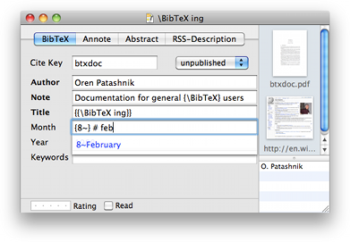

Editing Fields with Macros Editing Fields with Macros
Editing Fields with Macros Editing Fields with Macros
You can edit a field as raw BibTeX by pressing ⌘R in the edit window when one of the form fields has the keyboard focus.
See the BibTeX Intro for more details on BibTeX with macros.
When a field is edited as raw BibTeX, an extra view is shown below the field. This shows the expanded value of the BibTeX string, or reports errors if the BibTeX string you entered is not valid BibTeX. Note that bare strings in raw BibTeX mode are surrounded by curly braces (`{' and `}') or double-quotes (`"').
The next time you try to edit a field that contains raw BibTeX, the field will automatically go into raw BibteX mode. Text fields with raw BibTeX (e.g. a number or macro) is shown as dark blue in the editor, to provide a quick visual reference.
You can use autocompletion in macro editing as well, so you don't have to remember all of your cryptic abbreviations or constantly refer to the macro editor. Edit as raw BibTeX as described above, and start typing the expanded value; for a "Journal" field, this would be the actual name of the journal. Hit ⌥ -esc, and a list of possible entries should appear (based on the @string definitions in your file), and you can then insert the correct value from the list.